<!DOCTYPE HTML>
<html lang="es" >
    <head>
        <meta charset="UTF-8">
        <meta content="text/html; charset=utf-8" http-equiv="Content-Type">
        <title>3. Instalación de PiNet  · GitBook</title>
        <meta http-equiv="X-UA-Compatible" content="IE=edge" />
        <meta name="description" content="">
        <meta name="generator" content="GitBook 3.2.3">
        
        
        
    
    <link rel="stylesheet" href="gitbook/style.css">

    
            
                
                <link rel="stylesheet" href="gitbook/gitbook-plugin-accordion/accordion.css">
                
            
                
                <link rel="stylesheet" href="gitbook/gitbook-plugin-styled-blockquotes/plugin-styled-blockquotes.css">
                
            
                
                <link rel="stylesheet" href="gitbook/gitbook-plugin-githubcontributors/style.css">
                
            
                
                <link rel="stylesheet" href="gitbook/gitbook-plugin-image-captions/image-captions.css">
                
            
                
                <link rel="stylesheet" href="gitbook/gitbook-plugin-highlight/website.css">
                
            
                
                <link rel="stylesheet" href="gitbook/gitbook-plugin-search/search.css">
                
            
                
                <link rel="stylesheet" href="gitbook/gitbook-plugin-fontsettings/website.css">
                
            
        

    

    
        
    
        
    
        
    
        
    
        
    
        
    

        
    
    
    <meta name="HandheldFriendly" content="true"/>
    <meta name="viewport" content="width=device-width, initial-scale=1, user-scalable=no">
    <meta name="apple-mobile-web-app-capable" content="yes">
    <meta name="apple-mobile-web-app-status-bar-style" content="black">
    <link rel="apple-touch-icon-precomposed" sizes="152x152" href="gitbook/images/apple-touch-icon-precomposed-152.png">
    <link rel="shortcut icon" href="gitbook/images/favicon.ico" type="image/x-icon">

    
    <link rel="next" href="modulo-ivinstalaci-o-n-del-sistema-en-la-raspberry-pi.html" />
    
    
    <link rel="prev" href="instalacion-de-ubuntu.html" />
    

    </head>
    <body>
        
<div class="book">
    <div class="book-summary">
        
            
<div id="book-search-input" role="search">
    <input type="text" placeholder="Escribe para buscar" />
</div>

            
                <nav role="navigation">
                


<ul class="summary">
    
    

    

    
        
        
    
        <li class="chapter " data-level="1.1" data-path="./">
            
                <a href="./">
            
                    
                    Introducción
            
                </a>
            

            
        </li>
    
        <li class="chapter " data-level="1.2" data-path="no_te_gastes_mucho_dinero.html">
            
                <a href="no_te_gastes_mucho_dinero.html">
            
                    
                    ¿Tiene sentido tener un aula de informática?
            
                </a>
            

            
        </li>
    
        <li class="chapter " data-level="1.3" data-path="un-poco-de-historia.html">
            
                <a href="un-poco-de-historia.html">
            
                    
                    Un poco de Historia
            
                </a>
            

            
        </li>
    
        <li class="chapter " data-level="1.4" data-path="chapter1.html">
            
                <a href="chapter1.html">
            
                    
                    1. Materiales necesarios: Hardware y software
            
                </a>
            

            
        </li>
    
        <li class="chapter " data-level="1.5" data-path="instalacion-de-ubuntu.html">
            
                <a href="instalacion-de-ubuntu.html">
            
                    
                    2. Instalación de Ubuntu 16
            
                </a>
            

            
        </li>
    
        <li class="chapter active" data-level="1.6" data-path="modulo-iiiinstalaci-o-n-de-pinet.html">
            
                <a href="modulo-iiiinstalaci-o-n-de-pinet.html">
            
                    
                    3. Instalación de PiNet 
            
                </a>
            

            
        </li>
    
        <li class="chapter " data-level="1.7" data-path="modulo-ivinstalaci-o-n-del-sistema-en-la-raspberry-pi.html">
            
                <a href="modulo-ivinstalaci-o-n-del-sistema-en-la-raspberry-pi.html">
            
                    
                    4. Instalación del sistema en la Raspberry Pi
            
                </a>
            

            
        </li>
    
        <li class="chapter " data-level="1.8" data-path="modulo-vcreaci-o-n-de-usuarios-recursos-y-materiales-compartidos-en-el-sistema.html">
            
                <a href="modulo-vcreaci-o-n-de-usuarios-recursos-y-materiales-compartidos-en-el-sistema.html">
            
                    
                    5. Creación de usuarios. Creación de Carpetas Compartidas
            
                </a>
            

            
        </li>
    
        <li class="chapter " data-level="1.9" data-path="modulo-viinstalaci-o-n-de-un-nuevo-programa-epoptes.html">
            
                <a href="modulo-viinstalaci-o-n-de-un-nuevo-programa-epoptes.html">
            
                    
                    6. Instalación de un nuevo programa: “ Epoptes”
            
                </a>
            

            
        </li>
    
        <li class="chapter " data-level="1.10" data-path="modulo-viiotras-opciones-del-men-u.html">
            
                <a href="modulo-viiotras-opciones-del-men-u.html">
            
                    
                    7. Otras opciones del Menú.
            
                </a>
            

            
        </li>
    
        <li class="chapter " data-level="1.11" data-path="modulo-viiisoftware-educativo-inclu-i-do-en-la-raspberry-pi.html">
            
                <a href="modulo-viiisoftware-educativo-inclu-i-do-en-la-raspberry-pi.html">
            
                    
                    8. Software educativo incluído en la Raspberry Pi
            
                </a>
            

            
        </li>
    
        <li class="chapter " data-level="1.12" data-path="creditos.html">
            
                <a href="creditos.html">
            
                    
                    Créditos
            
                </a>
            

            
        </li>
    

    

    <li class="divider"></li>

    <li>
        <a href="https://www.gitbook.com" target="blank" class="gitbook-link">
            Publicado con GitBook
        </a>
    </li>
</ul>


                </nav>
            
        
    </div>

    <div class="book-body">
        
            <div class="body-inner">
                
                    

<div class="book-header" role="navigation">
    

    <!-- Title -->
    <h1>
        <i class="fa fa-circle-o-notch fa-spin"></i>
        <a href="." >3. Instalación de PiNet </a>
    </h1>
</div>


                    <div class="page-wrapper" tabindex="-1" role="main">
                        <div class="page-inner">
                            
<div id="book-search-results">
    <div class="search-noresults">
    
                                <section class="normal markdown-section">
                                
                                <h1 id="3-instalaci&#xF3;n-de-pinet">3. Instalaci&#xF3;n de PiNet</h1>
<p><em><strong>*(NOTA DEL AUTOR): Recomiendo realizar todo el m&#xF3;dulo sin entrar como root en nuestro servidor Ubuntu, ya que podr&#xED;amos tener problemas con los permisos de las carpetas que crea PiNet al iniciar.</strong></em></p>
<p>Una vez que tenemos un equipo con Ubuntu 16.04 o posterior podemos pasar  a instalar PiNet, el programa que actuar&#xE1; como servidor de nuestra aula de Inform&#xE1;tica de Pi&#xB4;s.</p>
<p>Su instalaci&#xF3;n resulta bastante sencilla;</p>
<p>*/ Comenzaremos por abrir nuestra terminal bien mediante el cuadro de buscar que aparece al pulsar en el bot&#xF3;n de men&#xFA; de Ubuntu o bien mediante el acceso directo a programas favoritos que aparecer&#xE1; a la izquierda.</p>
<p>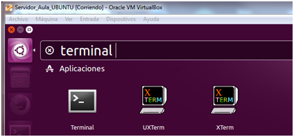 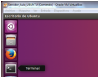</p>
<p>Una vez abierto escribiremos el siguiente comando (respetemos guiones y barras):</p>
<pre><code class="lang-bash">wget --content-disposition http://links.pinet.org.uk/jessie-stable-pinet
</code></pre>
<p>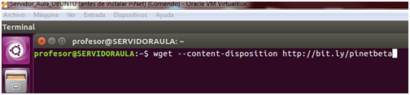</p>
<p>Nos descargar&#xE1; el instalador en nuestro equipo</p>
<p>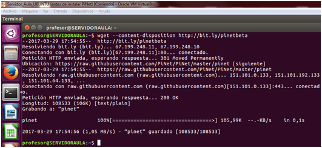</p>
<p>Deberemos ahora &quot;arrancarlo&quot;, mediante el comando</p>
<pre><code>sudo bash pinet
</code></pre><p>y comenzar&#xE1; la Instalaci&#xF3;n</p>
<p>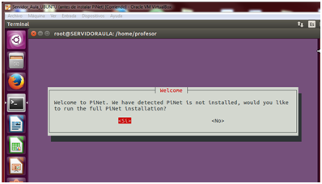 Marcamos SI</p>
<p>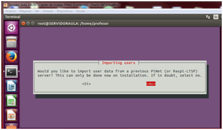     Marcamos No, ya que no tenemos usuarios creados con anterioridad, si queremos reinstalar PiNet podremos recuperar nuestro servidor (o incluso instalarlo en otro equipo pero con los mismos datos).</p>
<p>En la siguiente ventana nos preguntar&#xE1; que tipo de &quot;Canales&quot; queremos utilizar, marcaremos la opci&#xF3;n &quot;Stable&quot;</p>
<p>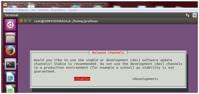</p>
<p>Nos pregunta despu&#xE9;s si queremos instalar alg&#xFA;n software adicional, para este curso lo dejaremos en blanco para posteriormente mostrar como podemos instalar nuevos programas en nuestras raspberry Pi desde el servidor PiNet.</p>
<p>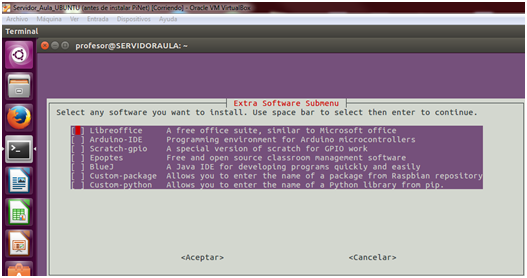</p>
<p>Lo dejamos en blanco y pasamos ahora a finalizar nuestra configuraci&#xF3;n de la instalaci&#xF3;n.</p>
<p>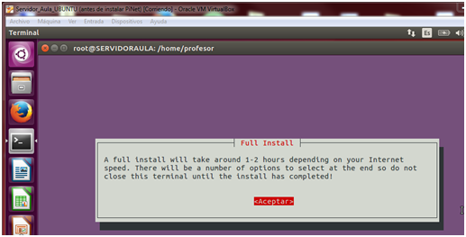</p>
<p>Cabe destacar que la duraci&#xF3;n depender&#xE1; tanto de la velocidad de internet como del n&#xFA;mero de paquetes que vayamos a instalar, si utilizamos VirtualBox aconsejamos subir la capacidad de Memoria RAM de nuestra m&#xE1;quina para acelerar el proceso, ya que puede llegar a durar hasta 3-4 horas.</p>
<p>Ahora toca esperar mientras el sistema trabaja.</p>
<p>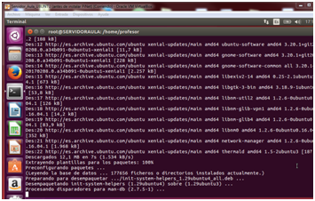     Imagen del proceso de instalaci&#xF3;n.</p>
<p>Una vez terminado, deberemos decidir si queremos que nuestros alumnos tengan acceso como root (sudo) o no. Ambas opciones tienen sus ventajas y desventajas y en cualquier caso podremos cambiarlas desde el men&#xFA; de usuarios una vez que el sistema este instalado tanto en Ubuntu como en las Rasbperry Pi. En principio y salvo que queramos ense&#xF1;ar a manejar sistemas GNU/Linux, recomendamos impedir a los alumnos usar esta opci&#xF3;n,  por lo menos hasta que nuestro control del servidor sea suficientemente alto como para &quot;deshacer&quot; cambios indeseados.</p>
<p>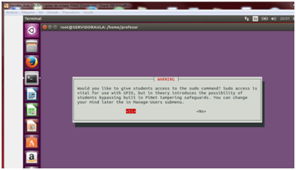</p>
<p>*/ Si s&#xF3;lo tenemos una red en nuestro servidor, dejaremos la siguiente opci&#xF3;n como sale por defecto. En caso de que vayamos a crear una red &#xFA;nica de Aula con el servidor actuando como tal y los equipos de los alumnos como &#x201C;terminales tontos&#x201D;, entonces deberemos elegir en el siguiente men&#xFA; la red que vayan a usar nuestros alumnos. En nuestro caso, lo dejamos como sale (en S&#xED;) La configuraci&#xF3;n podr&#xE1; cambiarse m&#xE1;s adelante.</p>
<p>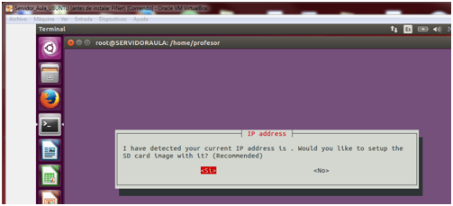</p>
<p>Configurada esta parte, pasaremos a ver un mensaje como el siguiente, nos acostumbraremos a ello, ya que aparecer&#xE1; cada vez que cambiemos algo en PiNet.</p>
<p></p>
<p>Aceptamos los dos siguientes mensajes sobre Informaci&#xF3;n Adicional.</p>
<p>Y por &#xFA;ltimo dejamos en blanco las preguntas que aparecen al final de la instalaci&#xF3;n.</p>
<p>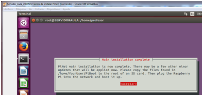</p>
<p>Al aceptar nos arranca directamente el programa, aunque recomendamos quitarlo para pasar al m&#xF3;dulo siguiente y configurar las SD para las Raspberry Pi.</p>
<p>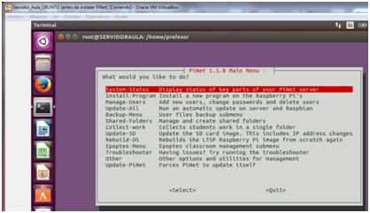</p>
<p>*/ TODAS LAS IM&#xC1;GENES UTILIZADAS EN EL PRESENTE M&#xD3;DULO HAN SIDO ELABORADAS POR EL AUTOR DEL CURSO.</p>
<h3 id="posibles-problemas-durante-la-instalaci&#xF3;n-por-ricardo-fuster-and&#xFA;jar">Posibles problemas durante la instalaci&#xF3;n, por Ricardo Fuster And&#xFA;jar</h3>
<blockquote>
<p>Varios compa&#xF1;eros, entre los cuales me encuentro, reportamos hace d&#xED;as en el foro un problema que surg&#xED;a a la hora de instalar PiNet en la Raspberry Pi, consistente en que, una vez instalado PiNet en Ubuntu y pasados los ficheros de la carpera Piboot a la SD card, se produc&#xED;a el siguiente fallo: </p>
<p><strong>/bin/sh: can&apos;t access tty; job control turned off (intransfer)</strong></p>
<p>En la secci&#xF3;n de &quot;Dudas&quot; del foro hay una entrada que incluye una captura de pantalla. Tras indagar todo el d&#xED;a de ayer en internet he conseguido solucionar el problema, al menos el que me afectaba a mi, por que seg&#xFA;n he podido leer el comando /bin/sh: can&apos;t access tty; job control turned off (intransfer) no se refiere a un &#xFA;nico problema, sino que alude a varios. Por lo tanto, es posible que la soluci&#xF3;n que aqu&#xED; expongo no sirva para todos aquellos afectados por esta situaci&#xF3;n.  </p>
<p>En mi caso, el problema estaba en la direcci&#xF3;n IP establecida en el archivo cmdline.txt. Este archivo se genera durante la instalaci&#xF3;n de Pinet, queda alojado en la carpeta Piboot y es uno de los que debemos copiar en la SD card para iniciar Pinet en la raspberry. Una vez copiados todos los archivo de Piboot en la tarjeta SD, abrimos cmdline.txt con el editor de texto (abrimos el archivo que hemos copiado en la SD, no el que est&#xE1; en la carpeta Piboot de Ubuntu). Veremos lo siguiente:  </p>
<p><strong>dwc_otg.lpm_enable=0 console=serial0,115200 kgdboc=serial0,115200 console=tty1 init=/sbin/init-ltsp nbdroot=:/opt/ltsp/armhf root=/dev/nbd0 elevator=deadline rootwait</strong>  </p>
<p>Despu&#xE9;s de nbdroot= deber&#xED;a aparecer nuestra direcci&#xF3;n IP. Lo que debemos hacer es modificar el fichero manualmente introduciendo nuestra IP. Repito, la modificaci&#xF3;n debemos realizarla en el archivo cmdline.txt copiado en la SD card (de hecho, el alojado en Piboot es un archivo solo de lectura y no permite introducir cambios). Quedar&#xE1; as&#xED;:  </p>
<p><strong>dwc_otg.lpm_enable=0 console=serial0,115200 kgdboc=serial0,115200 console=tty1 init=/sbin/init-ltsp nbdroot=192.168.1.137:/opt/ltsp/armhf root=/dev/nbd0 elevator=deadline rootwait</strong>  </p>
<p>Por supuesto, la direcci&#xF3;n IP que aparece aqu&#xED; es la m&#xED;a, de manera que debe&#xED;s saber cual es la vuestra e introducirla. En ubuntu basta con abrir el terminal y teclear ifconfig. Despu&#xE9;s introduces la SD card en la raspberry y la enciendes. Si vuestro problema es el mismo deber&#xED;a resolverse. Espero que esta explicaci&#xF3;n os sirva de ayuda y pod&#xE1;is solucionar el problema.</p>
</blockquote>
<p><div id="page-footer" class="localized-footer"><hr><p><a rel="license" href="http://creativecommons.org/licenses/by-nc-sa/4.0/" target="_blank"></a><br><span xmlns:dct="http://purl.org/dc/terms/" property="dct:title">Monta tu aula de inform&#xE1;tica con Raspberry Pi</span> por <span xmlns:cc="http://creativecommons.org/ns#" property="cc:attributionName">Fernando Gasca Andreu</span> bajo licencia <a rel="license" href="http://creativecommons.org/licenses/by-nc-sa/4.0/" target="_blank">Creative Commons Reconocimiento-NoComercial-CompartirIgual 4.0 Internacional License</a>.</p>
</div></p>

                                
                                </section>
                            
    </div>
    <div class="search-results">
        <div class="has-results">
            
            <h1 class="search-results-title"><span class='search-results-count'></span> results matching "<span class='search-query'></span>"</h1>
            <ul class="search-results-list"></ul>
            
        </div>
        <div class="no-results">
            
            <h1 class="search-results-title">No results matching "<span class='search-query'></span>"</h1>
            
        </div>
    </div>
</div>

                        </div>
                    </div>
                
            </div>

            
                
                <a href="instalacion-de-ubuntu.html" class="navigation navigation-prev " aria-label="Previous page: 2. Instalación de Ubuntu 16">
                    <i class="fa fa-angle-left"></i>
                </a>
                
                
                <a href="modulo-ivinstalaci-o-n-del-sistema-en-la-raspberry-pi.html" class="navigation navigation-next " aria-label="Next page: 4. Instalación del sistema en la Raspberry Pi">
                    <i class="fa fa-angle-right"></i>
                </a>
                
            
        
    </div>

    <script>
        var gitbook = gitbook || [];
        gitbook.push(function() {
            gitbook.page.hasChanged({"page":{"title":"3. Instalación de PiNet ","level":"1.6","depth":1,"next":{"title":"4. Instalación del sistema en la Raspberry Pi","level":"1.7","depth":1,"path":"modulo-ivinstalaci-o-n-del-sistema-en-la-raspberry-pi.md","ref":"modulo-ivinstalaci-o-n-del-sistema-en-la-raspberry-pi.md","articles":[]},"previous":{"title":"2. Instalación de Ubuntu 16","level":"1.5","depth":1,"path":"instalacion-de-ubuntu.md","ref":"instalacion-de-ubuntu.md","articles":[]},"dir":"ltr"},"config":{"plugins":["youtube","accordion","styled-blockquotes","localized-footer","edit-link","githubcontributors","image-captions","ga"],"styles":{"website":"styles/website.css","pdf":"styles/pdf.css","epub":"styles/epub.css","mobi":"styles/mobi.css","ebook":"styles/ebook.css","print":"styles/print.css"},"pluginsConfig":{"youtube":{},"accordion":{},"search":{},"styled-blockquotes":{},"localized-footer":{"filename":"./FOOTER.md","hline":true},"lunr":{"maxIndexSize":1000000,"ignoreSpecialCharacters":false},"fontsettings":{"theme":"white","family":"sans","size":2},"highlight":{},"ga":{"configuration":"auto","token":"UA-135691041-2"},"githubcontributors":{"contributorWidth":"300px","githubOwner":"catedu","githubRepository":"monta-tu-aula-de-informatica-con-raspberry-pi"},"sharing":{"facebook":true,"twitter":true,"google":false,"weibo":false,"instapaper":false,"vk":false,"all":["facebook","google","twitter","weibo","instapaper"]},"edit-link":{"label":"Edita esta página","base":"https://github.com/catedu/monta-tu-aula-de-informatica-con-raspberry-pi/edit/master"},"theme-default":{"styles":{"website":"styles/website.css","pdf":"styles/pdf.css","epub":"styles/epub.css","mobi":"styles/mobi.css","ebook":"styles/ebook.css","print":"styles/print.css"},"showLevel":false},"image-captions":{"caption":"Imagen - _CAPTION_","variable_name":"_pictures"}},"theme":"default","pdf":{"pageNumbers":true,"fontSize":12,"fontFamily":"Arial","paperSize":"a4","chapterMark":"pagebreak","pageBreaksBefore":"/","margin":{"right":62,"left":62,"top":56,"bottom":56}},"structure":{"langs":"LANGS.md","readme":"README.md","glossary":"GLOSSARY.md","summary":"SUMMARY.md"},"variables":{"title":"Monta tu aula de informática con Raspberry Pi","authors":["Fernando Gasca Andreu","___________"],"collaborators":[{"name":"_________","edited":"_____________"}],"_pictures":[]},"language":"es","gitbook":"*"},"file":{"path":"modulo-iiiinstalaci-o-n-de-pinet.md","mtime":"2020-10-27T22:28:53.237Z","type":"markdown"},"gitbook":{"version":"3.2.3","time":"2020-10-27T22:29:35.928Z"},"basePath":".","book":{"language":""}});
        });
    </script>
</div>

        
    <script src="gitbook/gitbook.js"></script>
    <script src="gitbook/theme.js"></script>
    
        
        <script src="gitbook/gitbook-plugin-accordion/accordionSelector.js"></script>
        
    
        
        <script src="gitbook/gitbook-plugin-edit-link/plugin.js"></script>
        
    
        
        <script src="gitbook/gitbook-plugin-githubcontributors/contributors.js"></script>
        
    
        
        <script src="gitbook/gitbook-plugin-ga/plugin.js"></script>
        
    
        
        <script src="gitbook/gitbook-plugin-search/search-engine.js"></script>
        
    
        
        <script src="gitbook/gitbook-plugin-search/search.js"></script>
        
    
        
        <script src="gitbook/gitbook-plugin-lunr/lunr.min.js"></script>
        
    
        
        <script src="gitbook/gitbook-plugin-lunr/search-lunr.js"></script>
        
    
        
        <script src="gitbook/gitbook-plugin-sharing/buttons.js"></script>
        
    
        
        <script src="gitbook/gitbook-plugin-fontsettings/fontsettings.js"></script>
        
    

    </body>
</html>

